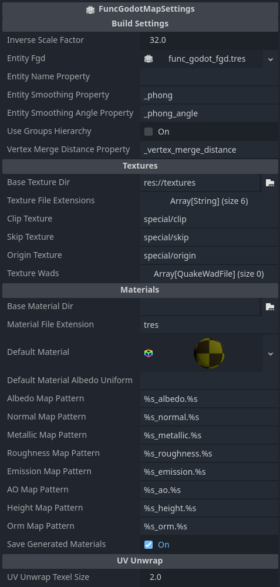

Textures
How Textures Work In FuncGodot
If you take a look at a .map file, you'll see that it's just a text file describing the makeup of your map and doesn't actually store any other data, including texture images. Let's look at this example of a Solid Entity in a map file:

// entity 1
{
"classname" "func_detail"
// brush 0
{
( -32 -64 -16 ) ( -32 -63 -16 ) ( -32 -64 -15 ) __TB_empty [ 0 -1 0 0 ] [ 0 0 -1 0 ] 0 1 1
( -64 -32 -16 ) ( -64 -32 -15 ) ( -63 -32 -16 ) __TB_empty [ 1 0 0 0 ] [ 0 0 -1 0 ] 0 1 1
( -64 -64 -32 ) ( -63 -64 -32 ) ( -64 -63 -32 ) special/clip [ -1 0 0 0 ] [ 0 -1 0 0 ] 0 1 1
( 64 64 32 ) ( 64 65 32 ) ( 65 64 32 ) __TB_empty [ 1 0 0 0 ] [ 0 -1 0 0 ] 0 1 1
( 64 32 16 ) ( 65 32 16 ) ( 64 32 17 ) special/clip [ -1 0 0 0 ] [ 0 0 -1 0 ] 0 1 1
( 32 64 16 ) ( 32 64 17 ) ( 32 65 16 ) special/clip [ 0 1 0 0 ] [ 0 0 -1 0 ] 0 1 1
}
}
This is a func_detail entity from the default FuncGodot.fgd. As you can see, the map file structure is pretty straight-forward. This particular map uses the Valve 220 format, having additional options for UV mapping. Each line in a brush definition describes a face on the brush, and within that you can see that our texture is defined as just its location relative to the game's texture folder or map's WAD file.
But if that's the case, how does FuncGodot know what file to use?
FuncGodot Map Settings have several properties that help define and apply textures to your meshes on build:
- Base Texture Dir : Root folder where your Godot map textures are located
- Texture File Extensions : The extensions to search for if no matching material is found
- Texture Wads : Array of WAD resources to search through
- Material File Extension : Format for custom texture materials, can be .tres, .res or .material
- Default Material : The default material that FuncGodot builds your map's materials from
- Default Material Albedo Uniform : If the default material is a ShaderMaterial rather than StandardMaterial3D, this is the shader uniform that provides the albedo texture
-
Save Generated Materials : Save automatically generated materials to disk, allowing reuse across multiple FuncGodot maps.
FuncGodot will skip saving materials using clip, skip, or missing textures.
NOTE: once saved, materials will no longer inherit from the Default Material. If you want to make any changes to their settings you will have to either do so manually or delete the materials and allow FuncGodot to rebuild and resave them.

FuncGodot's first step is to search the Base Texture Dir for a prebuilt material as defined by the brush face's texture name in the format defined by Material File Extension.
If it does not find this prebuilt material, it will search the Base Texture Dir for the Texture2D resource by the brush face's texture name using any one of the extensions defined by Texture File Extensions. If it finds the Texture2D, it will create a copy of the Default Material and apply the Texture2D as the duplicated material's albedo.
If it does not find the Texture2D, then it will use the default_texture.png found in the addons/func_godot/textures/ folder.

Once the material generation is completed, you can optionally have FuncGodot save generated materials so they can be reused by multiple FuncGodotMaps. Otherwise each FuncGodotMap will have its own unique material for each texture used in the map.
Automatic PBR Generation
You may have noticed that we skipped over a few settings before, all of them with the suffic "Map Pattern". FuncGodot has the ability to automatically generate PBR materials on build. Each of the "Map Pattern" properties tell FuncGodot's Texture Loader how to find each PBR map for our texture.
What's with all the %s everywhere?
It's a placeholder token that gets replaced during texture loading. Each pattern requires two %s tokens. The first token is for the texture's name as it appears in the map file. The second token is for the file extension; this is replaced as the Texture Loader cycles through the Map Settings' Texture File Extensions searching for your texture. So if Texture Loader is looking for the normal map of a texture with the name "rock" and our Map Settings' Normal Map Pattern is "%s_normal.%s" and it is currently checking for the "png" Texture File Extension, then it will be looking to see if the texture resource "rock_normal.png" exists, and if so it will be applied to the Map Settings' Default Material if it is a StandardMaterial3D.
Clip and Skip Textures
Mapping for Quake Godot
We started off this manual with the point that FuncGodot is not a BSP compiler. If we map like we do in traditional Quake mapping...


... we don't get the same result.


Instead we need to change our approach.
For those not familiar with traditional Quake mapping, the finished MAP gets compiled into a BSP file to be read by the engine. The compiling process calculates visibility between all of the rooms of your map and removes all faces that won't be viewed due to being outside the map. That means maps must be sealed completely, but you're also allowed to be lazy with brush texturing since if a face is "outside" the map it will get culled.
With Godot we need to think of these brushes as what they'll become in-engine: composited MeshInstance3Ds and CollisionShape3Ds. If we want to achieve the culled result on the left, we'll need to change the way we do things on the right.
Skip It


The Clip and Skip textures are arguably our most important textures when mapping for Godot. You can assign any texture's name to the Clip and Skip properties of the FuncGodotMapSettings resource. But what do they do?
The Clip texture will remove any face textured with it from the generated MeshInstance3D. The Skip texture behaves the same way if the Solid Entity's Collision Type is set to Convex. However, if the Solid Entity's Collision Type is set to Concave, this also removes the Skip textured faces from the generated CollisionPolygonShape3D.
Just keep in mind the general rule of thumb: if you want your entities to collide with the brush, use Clip...


... and if you want them to pass through, use Skip (with Concave collision).


The Origin Texture
In Half-Life mapping, some entities like rotating doors require an origin brush to determine where the hinge should be. FuncGodot provides a means to emulate this behavior using a special origin texture. Just like Clip and Skip, the Origin texture is assigned by the FuncGodotMapSettings resource.
To use it, first you must set your Solid Entity class resource origin type to BRUSH. Then in your map editor, create your brush entity as you normally would. Once you've done that, add an additional brush to your entity, move it to where you want the entity's pivot point to be, and texture it with the Origin texture.
Once you build the map in Godot, your entity should now have its pivot point set to the center of where the Origin brush was in the map file, and the Origin brush is removed.
One last note: if you don't create an Origin brush on a Solid Entity with the BRUSH origin type, it will fall back to using the BOUNDS_CENTER origin type.
WAD Files
FuncGodot provides the option to use Texture WAD files for your map materials. It's generally not recommended if it can be helped, but support for loose texture images varies from map editor to map editor. FuncGodot supports both the Quake WAD2 format and the Half-Life WAD3 format.
To use a WAD file with your FuncGodotMap just add your imported WAD resource to the map node's Texture Wads array.
The neat thing about how FuncGodot handles map textures is that we can technically use a completely different folder in TrenchBroom and even different image formats than the location and formats we keep them in Godot. This can be useful for advanced users, but you may want to just keep all of your textures unified.
Why Are My Textures Blurry!?
You may be encountering at least one of two issues: texture compression and / or material sampling settings.
Make sure your texture resource is set to either Lossless or VRAM uncompressed. Please refer to the Godot documentation on texture compression.
If you had created your own materials for your map, check that the material's or texture's Sampling Filter is set to Nearest Mipmap. Please refer to the Godot documentation on texture filtering.